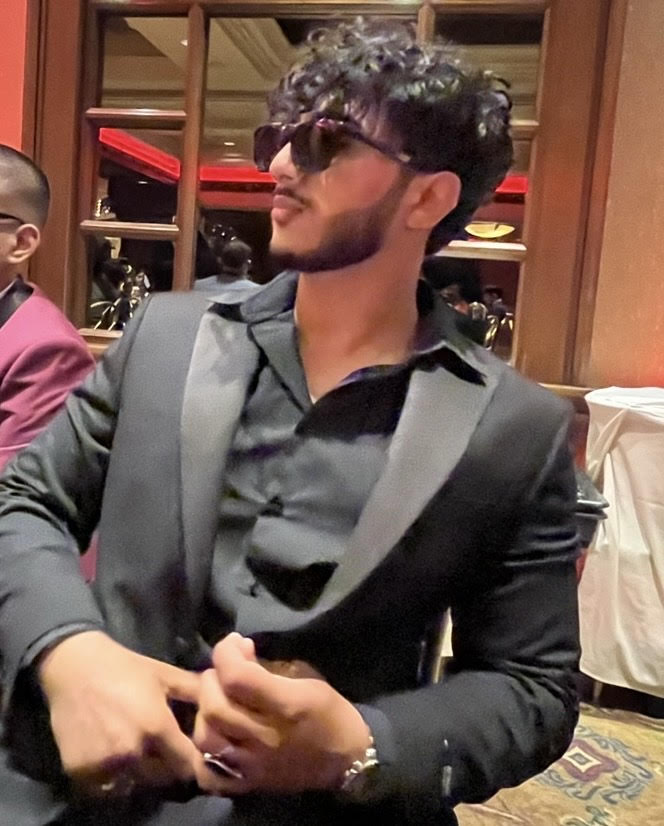
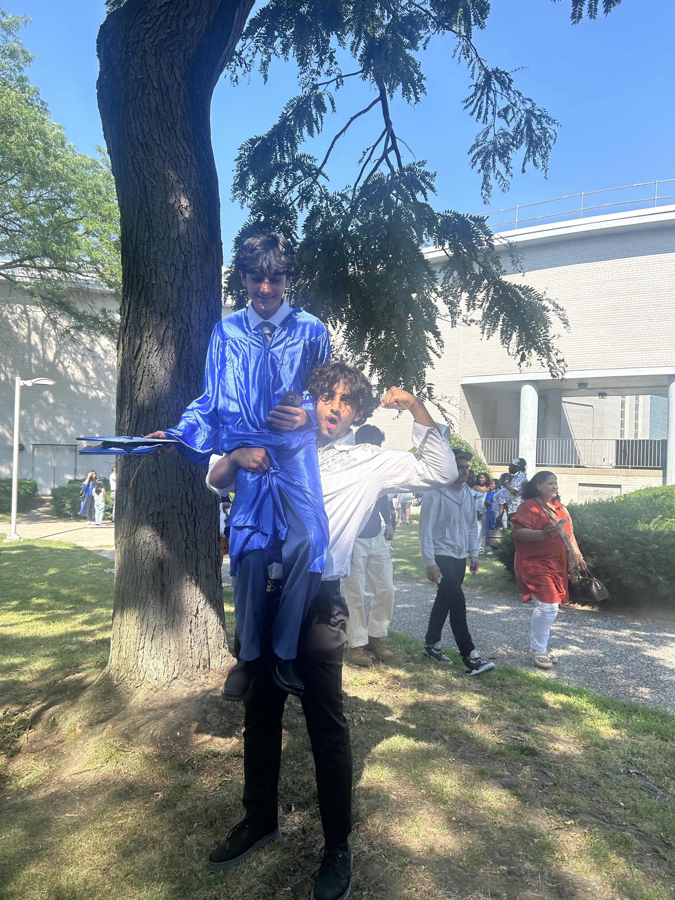

I'm a 19-year-old computer science student at Queens College, currently entering my sophomore year. I have experience in C++, Java, and Python, and I'm honing my skills in web development through my internship at RICH Inc. I love exploring new technologies and staying up-to-date with the latest trends in the tech industry.
I've always been passionate about giving back to the community, which is why I previously worked as a camp counselor during high school. This experience instilled in me the values of leadership, teamwork, and dedication. I'm now looking to leverage these skills in a tech role to make a meaningful impact. Currently, I'm a fellow at Headstarter AI, working on 7 AI projects in 7 weeks, which is providing me with hands-on experience in the field of artificial intelligence.


As a web designer intern at RICH Inc., I redesigned the website to improve user experience and added new interactive features, including a planet-themed navigation system that branches into different options related to RICH principles.
This project involved developing a solution to the classic 8 Queens problem using various algorithms. It helped me enhance my problem-solving skills and understanding of algorithmic efficiency.
I created a Java-based GUI puzzle game as a part of my coursework. This project allowed me to apply my knowledge of Java and GUI development, enhancing my skills in software design and user experience.
As a computer science student and aspiring software engineer, I have developed a strong foundation in various programming languages, including C++, Java, and Python. My internship experience at RICH Inc. has allowed me to hone my skills in web development, where I have gained expertise in HTML, CSS, and JavaScript.
I am particularly interested in artificial intelligence and machine learning, which I am currently exploring as a fellow at Headstarter AI. Through this fellowship, I am working on 7 AI projects in 7 weeks, gaining hands-on experience with neural networks, natural language processing, and computer vision.
Additionally, I am passionate about problem-solving and algorithmic challenges, as demonstrated by my projects such as the 8 Queens Project and Java GUI Puzzle Game. I am always eager to learn new technologies and stay updated with the latest industry trends.
Outside of academics and internships, I enjoy participating in hackathons and coding competitions, where I can collaborate with other talented individuals and push my creative boundaries. I also have a keen interest in cybersecurity, data science, and cloud computing, and I am constantly seeking opportunities to expand my knowledge in these areas.